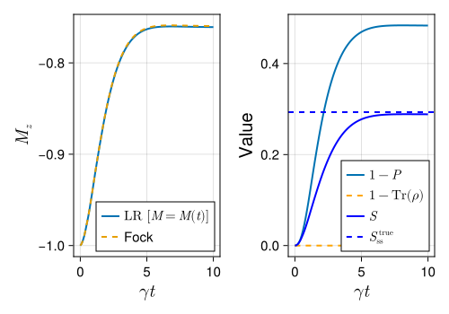

Low rank master equation
Introduction
In this tutorial we will demonstrate how to solve the master equation without the quadratic overhead associated with the full manipulation of the density matrix. For a detailed explanation of the method, we recommend to read the Ref. (Gravina and Savona 2024).
The proposed approach is based on the realization that many quantum systems, particularly those with low entropy, can be effectively represented by a density matrix of significantly lower rank than what the whole Hilbert space would require. This reduction is achieved by focusing on a subset of states that capture the essential structure of the statistical ensemble characterizing the mixed quantum state, thereby reducing computational complexity while maintaining the exactness of the method.
Low-rank master equations
We consider a decomposition of the density matrix of the form \[ \hat\rho(t) = \sum_{i,j=1}^{M(t)} B_{i,j}(t) | \varphi_i(t) \rangle \langle \varphi_j(t) |. \] The states \(\{|\varphi_k(t)\rangle\,;\,k=1,\ldots,M(t)\}\) spanning the low-rank manifold, can in turn be decomposed as \[ |\varphi_k(t)\rangle = \sum_{\alpha=1}^{N} z_{\alpha,k}(t) |e_\alpha\rangle, \] where \(\{|e_\alpha\rangle\,;\,\alpha=1,\ldots,N\}\) is a fixed basis of the Hilbert space, and \(z_{\alpha,k}(t)\) are the time-dependent coefficients.
The coefficients \(B_{i,j}(t)\) are collected in the matrix \(B(t)\), and the coefficients \(z_{\alpha,k}(t)\) are collected in the matrix \(z(t)\).
In (Gravina and Savona 2024) all coefficients \(B_{i,j}(t)\) and \(z_{\alpha,k}(t)\) are taken to be variational parameters. The evolution equation for the density matrix is consequently mapped onto a set of differential equations for such parameters via the time-dependent variational principle (TDVP).
The TDVP ensures a dynamical adjustment of the variational states, guaranteeing the optimal set of states is selected at all times to best approximate the dissipative evolution. This allows for a significant reduction in computational complexity as the number of states \(M(t)\) necessary to accurately capture the dynamics of the system is as small as can be, hopefully much smaller than the full Hilbert space dimension \(N\).
Low-rank dynamics of the transverse field Heisenberg model
In this example we consider the dynamics of the transverse field Ising model (TFIM) on a 2x3 lattice. We start by importing the packages
We define the lattice with dimensions Nx = 2 and Ny = 3 and use the Lattice class to generate the lattice.
Lattice{Int64, LinearIndices{2, Tuple{Base.OneTo{Int64}, Base.OneTo{Int64}}}, CartesianIndices{2, Tuple{Base.OneTo{Int64}, Base.OneTo{Int64}}}}(2, 3, 6, [1 3 5; 2 4 6], CartesianIndices((2, 3)))The Hamiltonian of the TFIM reads \[ H = J_x \sum_{\langle i,j \rangle} \sigma_i^x \sigma_j^x + J_y \sum_{\langle i,j \rangle} \sigma_i^y \sigma_j^y + J_z \sum_{\langle i,j \rangle} \sigma_i^z \sigma_j^z + h_x \sum_i \sigma_i^x, \] where $ _i^{x,y,z} $ are the Pauli matrices acting on site $ i $ and $ i,j $ denotes nearest neighbors. The collapse operators are given by \[ c_i = \sqrt{\gamma} \sigma_i^-, \] where $ _i^- $ is the lowering operator acting on site $ i$. The many-body operators are constructed using
Jx = 0.9
Jy = 1.04
Jz = 1.0
hx = 0.0
γ = 1
Sx = mapreduce(i->MultiSiteOperator(latt, i => sigmax()), +, 1:latt.N)
Sy = mapreduce(i->MultiSiteOperator(latt, i => sigmay()), +, 1:latt.N)
Sz = mapreduce(i->MultiSiteOperator(latt, i => sigmaz()), +, 1:latt.N)
SFxx = sum([MultiSiteOperator(latt, i => sigmax()) * MultiSiteOperator(latt, j => sigmax()) for i in 1:latt.N for j in 1:latt.N])
H, c_ops = DissipativeIsing(Jx, Jy, Jz, hx, 0., 0., γ, latt; boundary_condition=:periodic_bc, order=1)
e_ops = (Sx, Sy, Sz, SFxx)
tl = LinRange(0, 10, 100);Constructing the low-rank basis
We proceed by constructing the low-rank basis. N_cut is the dimension of the Hilbert space of each mode, and N_modes is the number of modes (or spins). We consider an initial low-rank basis with M = Nx * Ny + 1 states.
We first define the lr-space dimensions
Since we will take as initial state for our dynamics the pure state with all spins pointing up, the initial low-rank basis must include at least this state.
ϕ = Vector{QuantumObject{KetQuantumObject,Dimensions{M - 1,NTuple{M - 1,Space}},Vector{ComplexF64}}}(undef, M)
ϕ[1] = kron(fill(basis(2, 1), N_modes)...)
Quantum Object: type=Ket dims=[2, 2, 2, 2, 2, 2] size=(64,)
64-element Vector{ComplexF64}:
0.0 + 0.0im
0.0 + 0.0im
0.0 + 0.0im
0.0 + 0.0im
0.0 + 0.0im
0.0 + 0.0im
0.0 + 0.0im
0.0 + 0.0im
0.0 + 0.0im
0.0 + 0.0im
⋮
0.0 + 0.0im
0.0 + 0.0im
0.0 + 0.0im
0.0 + 0.0im
0.0 + 0.0im
0.0 + 0.0im
0.0 + 0.0im
0.0 + 0.0im
1.0 + 0.0imThe remaining M-1 states are taken as those with minimal Hamming distance from the latter state, that is those we obtain by flipping the spin of a single site with respect to the completely polarized state.
At this point the vector of states ϕ contains the full representation of our low-rank states. These coefficients comprise matrix z.
The matrix B, on the other hand, contains the populations and coherences with which each of the low-rank states contributes to the density matrix. We initialize it so that only the first state is populated, and all other states are unpopulated.
We also compute the full density matrix ρ from the low-rank representation. Of course this defeats the purpose of the low-rank representation. We use it here for illustrative purposes to show that the low-rank predictions match the exact dynamics.
Full evolution
We now compare the results of the low-rank evolution with the full evolution. We first evolve the system using the mesolve function
Low Rank evolution
The lr_mesolve function allows to conveniently keep track of non-linear functionals of the density matrix during the evolution without ever computing the full density matrix and without the need to store z and B at each time step. To do so we define the functionals of the density matrix that we want to keep track of and that will be evaluated at each time step.
We compute the purity \[ P = \mathrm{Tr}(\rho^2), \] the von Neumann entropy \[ S = -\mathrm{Tr}(\rho \log_2(\rho)), \] and the trace \[ \mathrm{Tr}(\rho). \]
To maximize efficiency and minimize memory allocations we make use of preallocated variables stores in the parameters constructor of the solver.
function f_purity(p, z, B)
N = p.N
M = p.M
S = p.S
T = p.temp_MM
mul!(T, S, B)
return tr(T^2)
end
function f_trace(p, z, B)
N = p.N
M = p.M
S = p.S
T = p.temp_MM
mul!(T, S, B)
return tr(T)
end
function f_entropy(p, z, B)
C = p.A0
σ = p.Bi
mul!(C, z, sqrt(B))
mul!(σ, C', C)
return entropy_vn(Qobj(Hermitian(σ), type=Operator), base=2)
end;A critical aspect of the LR truncation is the possibility to dynamically adjust the dimension of the basis throughout the system’s evolution \(M=M(t)\). This adaptability is essential for accommodating changes in the system’s entropy over time.
To adapt the dimension of the low-rank basis, we look at a control parameter \(\chi\) that is positively correlated with the entropy of the system and provides a measure of the quality of the low-rank approximation. When \(\chi\) exceeds a certain threshold, the dimension of the low-rank basis is increased by one.
The options below specify how the dimension of the low-rank basis is adjusted during the evolution.
err_max is the maximum error allowed in the time evolution of the density matrix.
p0 is the initial population with which the new state is added to the basis after crossing the threshold.
adj_condition = "variational" selects one of three possible definitions for the control quantity chi. Specifically, the selected option consists in the leakage from the variational manifold and is defined as \[
\chi = \operatorname{Tr}(S^{-1} L).
\]
Finally, Δt specifies the checkpointing interval by which the simulation is rewinded upon the basis expansion.
Not directly related to the basis expansion, but still important for the stability of the algorithm, are the options atol_inv (the tolerance for the inverse of the overlap matrix) and alg (the ODE solver).
We now launch the evolution using the lr_mesolve function
sol_lr = lr_mesolve(H, z, B, tl, c_ops; e_ops = e_ops, f_ops = (f_purity, f_entropy, f_trace), opt = opt);Progress: 2%Progress: 3%Progress: 4%Progress: 5%Progress: 6%Progress: 7%Progress: 8%Progress: 9%Progress: 10%Progress: 11%Progress: 12%Progress: 13%Progress: 14%Progress: 15%Progress: 16%Progress: 17%Progress: 18%Progress: 19%Progress: 20%Progress: 21%Progress: 22%Progress: 23%Progress: 24%Progress: 25%Progress: 26%Progress: 27%Progress: 28%Progress: 29%Progress: 30%Progress: 31%Progress: 32%Progress: 33%Progress: 34%Progress: 35%Progress: 36%Progress: 37%Progress: 38%Progress: 39%Progress: 40%Progress: 41%Progress: 42%Progress: 43%Progress: 44%Progress: 45%Progress: 46%Progress: 47%Progress: 48%Progress: 49%Progress: 50%Progress: 51%Progress: 52%Progress: 53%Progress: 54%Progress: 55%Progress: 56%Progress: 57%Progress: 58%Progress: 59%Progress: 60%Progress: 61%Progress: 62%Progress: 63%Progress: 64%Progress: 65%Progress: 66%Progress: 67%Progress: 68%Progress: 69%Progress: 70%Progress: 71%Progress: 72%Progress: 73%Progress: 74%Progress: 75%Progress: 76%Progress: 77%Progress: 78%Progress: 79%Progress: 80%Progress: 81%Progress: 82%Progress: 83%Progress: 84%Progress: 85%Progress: 86%Progress: 87%Progress: 88%Progress: 89%Progress: 90%Progress: 91%Progress: 92%Progress: 93%Progress: 94%Progress: 95%Progress: 96%Progress: 97%Progress: 98%Progress: 99%Progress: 100%We can now compare the results of the low-rank evolution with the full evolution.
m_me = real(sol_me.expect[3, :]) / Nx / Ny
m_lr = real(sol_lr.expect[3, :]) / Nx / Ny
fig = Figure(size = (500, 350), fontsize = 15)
ax = Axis(fig[1, 1], xlabel = L"\gamma t", ylabel = L"M_{z}", xlabelsize = 20, ylabelsize = 20)
lines!(ax, tl, m_lr, label = L"LR $[M=M(t)]$", linewidth = 2)
lines!(ax, tl, m_me, label = "Fock", linewidth = 2, linestyle = :dash)
axislegend(ax, position = :rb)
ax2 = Axis(fig[1, 2], xlabel = L"\gamma t", ylabel = "Value", xlabelsize = 20, ylabelsize = 20)
lines!(ax2, tl, 1 .- real(sol_lr.fexpect[1, :]), label = L"$1-P$", linewidth = 2)
lines!(
ax2,
tl,
1 .- real(sol_lr.fexpect[3, :]),
label = L"$1-\mathrm{Tr}(\rho)$",
linewidth = 2,
linestyle = :dash,
color = :orange,
)
lines!(ax2, tl, real(sol_lr.fexpect[2, :]) / Nx / Ny, color = :blue, label = L"S", linewidth = 2)
hlines!(ax2, [Strue], color = :blue, linestyle = :dash, linewidth = 2, label = L"S^{\,\mathrm{true}}_{\mathrm{ss}}")
axislegend(ax2, position = :rb)
fig
Version Information
QuantumToolbox.jl: Quantum Toolbox in Julia
≡≡≡≡≡≡≡≡≡≡≡≡≡≡≡≡≡≡≡≡≡≡≡≡≡≡≡≡≡≡≡≡≡≡≡≡≡≡≡≡≡≡≡≡≡
Copyright © QuTiP team 2022 and later.
Current admin team:
Alberto Mercurio and Yi-Te Huang
Package information:
====================================
Julia Ver. 1.11.3
QuantumToolbox Ver. 0.25.2
SciMLOperators Ver. 0.3.12
LinearSolve Ver. 2.39.0
OrdinaryDiffEqCore Ver. 1.15.1
System information:
====================================
OS : Linux (x86_64-linux-gnu)
CPU : 4 × AMD EPYC 7763 64-Core Processor
Memory : 15.615 GB
WORD_SIZE: 64
LIBM : libopenlibm
LLVM : libLLVM-16.0.6 (ORCJIT, znver3)
BLAS : libopenblas64_.so (ilp64)
Threads : 4 (on 4 virtual cores)